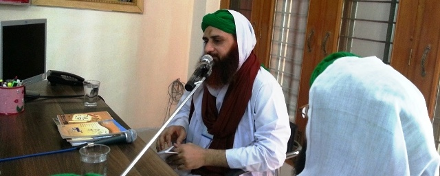
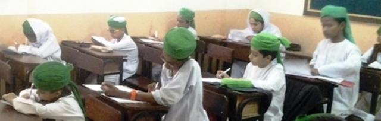

Rukn-e-Shura meets City Zimmedaran of Dar-ul-Madinah(Islamic school system)
Rukn-e-Shura Abu Soban Muhammad Athar Attari and Dar-ul-Madinah Majlis held a Madani Mashwarah with city Zimmedaran at Dar-ul-Madinah Sardarabad (Faisalabad) on Saturday, 14 November 2015.
City Zimmedaran discussed various academic and management affairs of Dar-ul-Madinah with Rukn-e-Shura and received Madani pearls from him. They also decided some Madani pearl on various significant aspects. The Madani Mashwara ended on Sunday, 15 November 2015.
Bab-ul-Madinah Nigran Abul Hasan Muhammad Amin Attari visited Dar-ul-Madinah headoffice on Thursday, 29 October 2015. He held a Madani Mashwarah with Rukn-e-Shura Abu Soban Muhammad Athar Attari & Majlis Dar-ul-Madinah.
17
Dec
2014

Rukn-e-Shura meets Majlis of Dar-ul-Madinah
Rukn-e-Shura Abu Soban Muhammad Athar Attari held a Madani Mashwarah with Majlis Dar-ul-Madinah at Dar-ul-Madinah head office, Bab-ul-Madinah (Karachi) during past days.
Majlis members discussed various academic and management affairs of Dar-ul-Madinah with Rukn-e-Shura. He presented Madani pearls to the Majlis members regarding these affairs.
1
Sep
2014

Dar-ul-Madinah conducts First Terminal Examination
Dar-ul-Madinah concluded First Terminal Examination papers in Punjab and Sindh for Lilbaneen, Lilbanat and Islamic School System.
In Punjab the examination commenced on Monday, September 22 and ended on Tuesday, September 30. Sindh examinations started on Monday, October 27 and concluded on Monday, November 10.
The students put a lot of efforts in attempting the examination papers and were hopeful of getting positive results.